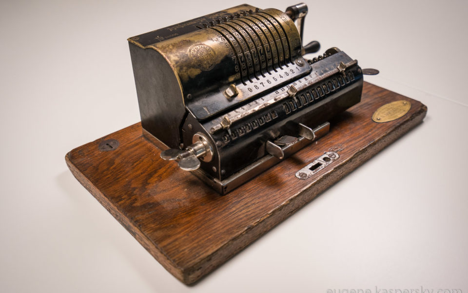
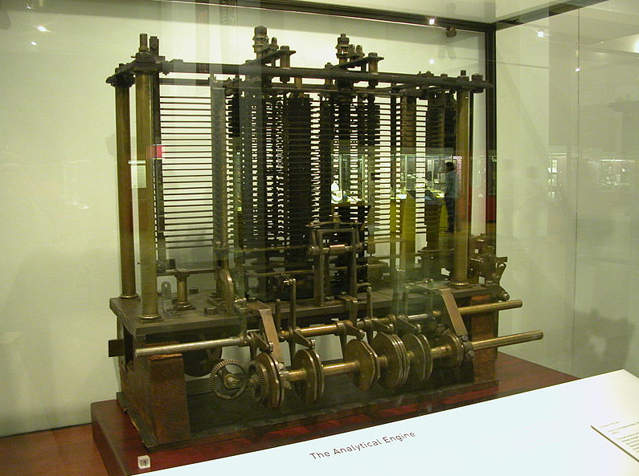
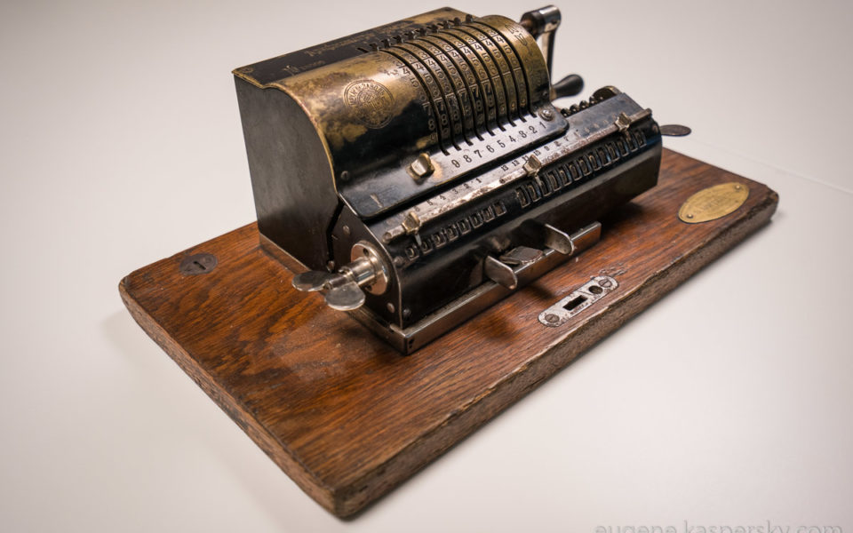
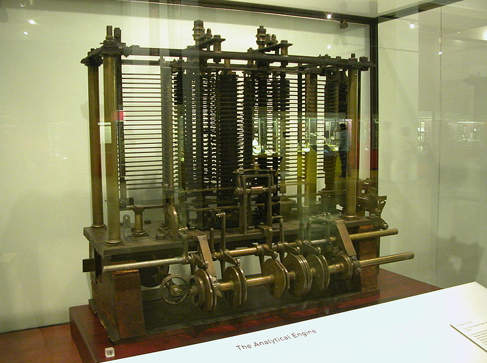

Ábaco: Serie de alambres paralelos, sujetos por los extremos en un armazón rectangular, sobre los que se pueden desplazar una serie de bolas o fichas.
La Calculadora de Sckickard En 1623 Wilhelm Sckickard construye la primera máquina de calcular. La Pascalina
1642 Blaise Pascal. Conjunto de discos dentados, cada uno de los cuales tiene 10 divisiones, que representaban un dígito. Escapaz de realizar sumas y restas. La Calculadora Universal
1694 Gottfried W. Leibniz. Perfecciona la máquina de Pascal añadiéndole la multiplicación y división.
La Lógica Matemática George Boole (1815-1864), es el fundador de la teoría de la lógica matemática.
El Padre de la Computadora
Se considera a Charles Babbage (1791- 1871), como el padre de los sistemas actuales de computación. A Charles Babbage se le atribuye el desarrollo de dos máquinas de cálculo:
La Máquina Diferencial: (1821) capaz de calcular polinomios de sexto grado y tabular mecánicamente hasta veinte cifras y ocho decimales
La Lógica Matemática George Boole (1815-1864), es el fundador de la teoría de la lógica matemática.
La Máquina Analítica: (1833) sistema mecánico precursor de la computadora del siglo XX. Disponía de:
La Máquina de Tabular En 1890 Herman Hollerith (1860-1929), inventó su máquina tabuladora que utilizaba corriente eléctrica para detectar los agujeros que estaban perforados y así hizo registrar la información en tarjetas, y el tiempo total del proceso se redujo. Sistema de automatización del censo.

 


